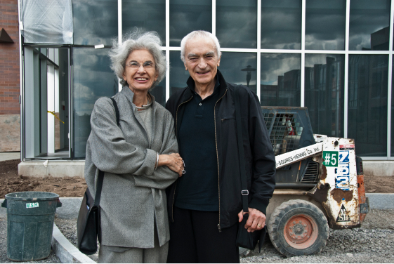
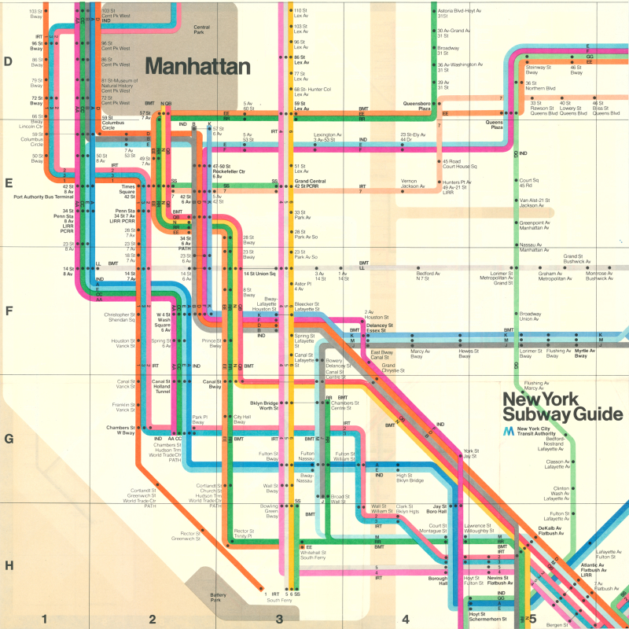

Why is Massimo Vignelli one of the most important icons in modern design?
In this article I will be explaining different reasons as to why Massimo Vignelli has become one of the most important icons in the modern design industry and how he has inspired many great designers in today's society. You are most likely familiar with Massimo Vignelli’s work whether you know it or not.
His work is displayed in your everyday life, on your way to work, as you are entering the subway you will glance at his masterpiece, which most people don’t realise the importance of. Or sit back and think of a time in your life when your sitting in the airport waiting for your flight, you notice the different airlines passing by, for example American Airlines logo, the double A and have never thought of the mastermind behind the design of the logo. Massimo Vignelli was a true Michelangelo of the design world, with a high profile career spanning over sixty years and many areas of design. For example, packaging , house ware, furniture, public signage and show room design. He is known for the saying “if you can design one thing, you can design everything”(Icon By Design, no date).
Vignelli played a major role in shaping the societal and visual aspect of the 20th century, with his clean and minimalist approach to design. So how has he become one of the most important icons in the modern design industry whilst also becoming a massive influence on designers today.
The Man
On 10TH January 1931, Massimo Vignelli was born in Milan during pre-war Italy. There is little known about his early childhood other than understanding that this is when he fell in love with design. At an early age, during a meeting with a friend of his mother’s (an interior designer), Vignelli began to understand that his environment had become the way it was through human intention.“someone had ‘made it so’”(Icon By Design, no date). He claimed this was his ‘eureka moment’.
He attended Brera Academy, an art school in Milan, from 1948 to 1950. Following this, Vignelli joined The Polytechnic University of Milan in 1950 and graduated in 1953 with an architectural degree. Finally, from the years of 1953 to 1957; he held a place in the School of Architecture at the University of Venice, alongside working for Venini (Vignelli, no date). Here Vignelli designed: glass windows, lighting fixtures, pitchers and drinking glasses. Many of his designs are now displayed in museums, such as Die Neue Sammlung in Munich, the Musée des Arts Décoratifs in Montreal, The Metropolitan Museum of Art and the Museum of Modern Art in New York and others (Massimo Vignelli, 2016).
During his studies his professor taught under the concept that good architects “should be able to design everything from a spoon to a city” (Icon By Design, n.d.). Vignelli embraced this motto which stuck with him the rest of his career. From there he quickly befriended many distinguished designers of this time including Le Corbusier and Charles Eames. After he graduated with his second architectural degree, Vignelli was offered a scholarship to study in America at Towle Silversmiths in Massachusetts (Eye Magazine | Feature | Reputations: Massimo Vignelli, no date). From there him and his wife, Lella Vignelli, who he met at an architecture convention and married in 1957, went to the USA where he studied with Towle Silversmiths and she studied at Massachusetts Institute of Technology.
Massimo and Lella returned to Milan in 1960 and opened a small architecture studio ‘Lella and Massimo Vignelli Office of Design and Architecture’. They produced things like office and domestic products, furniture and graphics, such as logos.
The Artwork
The couple founded Unimark International when they moved to Chicago in 1965. The business specialised in graphic designing for large, corporate companies. Vignelli's ingenious style of design gained extreme popularity all over the United States of America, due to his introduction of Helvetica in graphic design. The designs they created were captivating, practical and balanced. To produce this outcome they applied basic geometric shapes to a variety of product designs, for example: spheres, cubes, cylinders and pyramids (Massimo Vignelli | Biography, Designs and Facts, no date).
Unimark International became one the worlds largest design companies due to Vignelli expanding the business and creating a new headquarters in New York in 1966. This lead to a huge break through within the design industry as they had offices in New York, Chicago, Detroit, Johannesburg, Milan, Denver, Cleveland, London, San Francisco and Melbourne.
In 1971 Vignelli later went on to leave the company as it was no longer what he had visioned (Posted by:Jonny Clark, 2014) and to be with his wife. Due the laws at the time Lella was unable to join Unimark, as married couples could not work together. Therefore the couple established Vignelli Associates where Lella could work by his side.
American Airlines
During his time at Unimark, Vignelli was responsible for some of the most iconic design projects to date. One of them being the American Airlines logo which he designed in 1967.
The logo was simple, two A’s, one blue and one red in the Helvetica typeface, with the company name ‘American Airlines’ below (‘American’ in red and ‘Airlines’ in blue) (sites.northwestern.edu, n.d.).
The airline demanded there be an eagle included in the design as it was a huge part of the companies identity, however Vignelli refused due to his belief that an abstract eagle would be unfitting. Pilots from the company issued threats to go on strike because of this issue. Therefore, the airline hired the office of Henry Dreyfuss to add the eagle to Vignellis initial double A design.
The finalised logo portrayed everything the airline wanted to be seen as; a diligent, trustworthy American airline (May, 2014). The logo stuck for an amazing 46 years until it was redesigned in 2013. In my opinion American Airlines will always bring to mind Vignellis timeless quality of work.
NYC Subway
In 1972, Vignelli transformed the New York City subway map into a modernist masterpiece. Although the map is not geographically accurate it was used for 7 years before being replaced by a more accurate representation of the geographical layout(1972 Vignelli Subway Map, no date). It is now a huge inspiration and favourite of many designers today.
In 1966 the New York Transit authority were desperate to find a fix for their mix-matched signage and pure chaos of the NYC subway. They immediately got to work with Unimark to create a more unified and modern signage and navigation system(Martin, 2021).
“Graphic design was just half the story. Their approach was to try to figure out what was wrong and, in effect, fix the broken system.” — Alexander Tochilovsky, on Vignelli and Noorda
To create this outcome Vignelli simplified the map down to coloured dots and lines. Dots representing the stations, which connected colour-coded lines running horizontal, vertical or at 45 degree angles. He used a neutral colour pallet to represent other parts of the city, for example, parks were brown and water was beige(1972 Vignelli Subway Map, no date).
Many things on the map such as Central Park are distorted and several landmarks were not placed or mentioned on the map.
The official map was released to the public in 1972 and it received many mixed reviews. The highest admiration from the design community but rejection from many New Yorkers who expected a geographical correct map for their everyday use.
However Vignelli believed that what he created was a seamless map with a dot-to-dot process that was easy to read and could be memorised by everyday users. From a design point of view I think the map is genius, it portrays a unified, modern design and is aesthetically pleasing to look at.
The Conclusion
In conclusion, Massimo Vignelli started off as a young enthusiastic student who studied many degrees while also making a start to his high profile career as a designer without knowing.
In his early days before moving to the United States, Vignelli took an entrepreneurial path when he opened his own Architecture Studio with Lella.
Later discovering they could have greater opportunities by moving to America, that’s when they founded Unimark which was a great success as it soon became famous worldwide allowing Vignelli to further expand his design portfolio. He did this by working with American Airlines to create their famous double A logo which stayed with them for the next 46 years.
During that time he also redesigned the New York City Subway map and signage which wasn’t as successful as intended with the general public as it only lasted 7 years, however for the design community it has become a very inspirational piece of art.
Vignelli was a great inspiration and teacher to many designers today and will always be one of the most important icons in modern design.